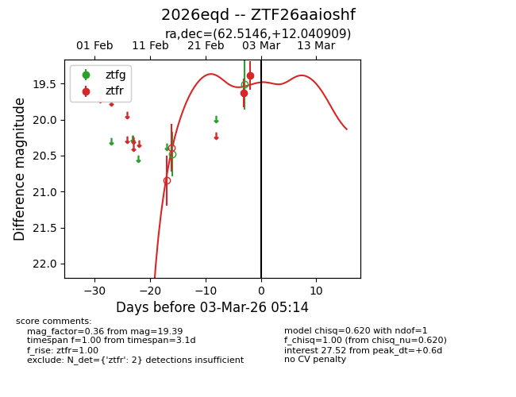
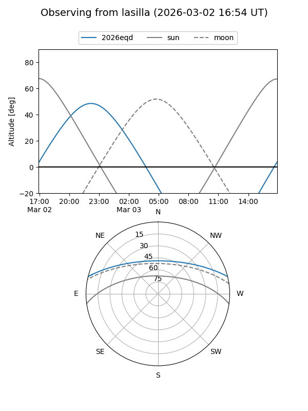
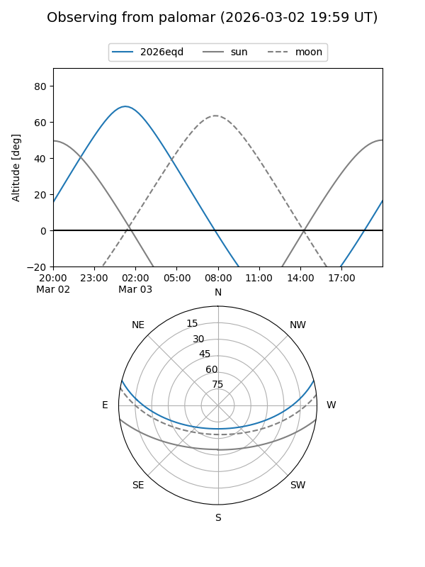
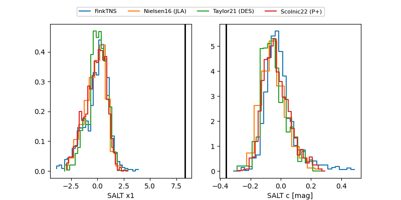

2026eqd
Target 2026eqd at 2026-03-03 05:15
Aliases and brokers:
FINK: link
Lasair: link
ALeRCE: link
TNS: link
YSE: link
alt names
ZTF26aaioshf (ztf,fink_ztf)
2026eqd (tns,yse)
Coordinates:
equatorial (ra, dec) = 62.5146,+12.04091
equatorial (HMS+DMS) = 04:10:03.51,+12:02:27.27
galactic (l, b) = (180.4595,-27.92837)
Flags:
Photometry:
last ztfr=19.39
2 ztfr detections
Lightcurve

Visibility


Additional plots
